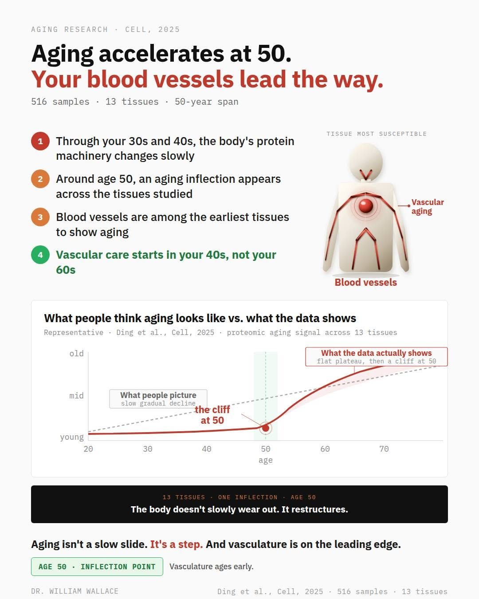

The vasculature is one of the first tissues to age in humans.
This aging process is step-wise as opposed to gradual.
William Wallace shares a Cell proteomics study (Ding et al., 516 samples from 13 tissues, ages 20s-70s) in which the aging signal shifts sharply around age 50 rather than declining gradually. Earlier work found non-linear waves around 34, 60 and 78 (Lehallier 2019) and 44 and 60 (Shen 2024). He notes the vasculature is among the first tissues to age.
The vasculature is one of the first tissues to age in humans.
This aging process is step-wise as opposed to gradual.
Most people picture aging as a slow, steady decline. The data shows it's a step.
Ding and colleagues recently published the most comprehensive human aging proteomics study to date in Cell. 516 samples across 13 different tissues, spanning ages in their 20s through their 70s. They tracked how the body's protein machinery changes across the lifespan.
For most of your 30s and 40s, your proteome stays relatively quiet. Slow drift, no major reorganization. Then around age 50, the aging signal across the tissues studied shifts sharply. The body doesn't slowly wear out across the decades. It hits an inflection point and restructures.
This pattern isn't entirely new. Lehallier et al. (2019, Nat Med) reported similar non-linear waves around ages 34, 60, and 78 in plasma proteomics. Shen et al. (2024, Nat Aging) found inflections around 44 and 60. Ding's work adds tissue resolution and confirms a major wave at 50.
The most striking detail: blood vessels are among the earliest tissues to show aging signatures. Not the brain. Not the liver. The vasculature. The team identified a protein called GAS6 as a candidate driver of vascular aging.
Why this matters for anyone in their 30s or 40s.
Most people don't get serious about cardiovascular markers until their 50s or 60s. After a borderline cholesterol panel. After a doctor flags something. By that point, the proteome already restructured a decade earlier. You're treating the consequences.
The data says the leverage window is your 40s, while change is still slow.
Three vascular markers worth getting before 50:
ApoB. A more accurate cardiovascular risk marker than LDL alone. Measures the actual atherogenic particle count.
Blood pressure. Single largest modifiable cardiovascular risk factor. Track at home with a quality cuff.
Lipoprotein(a). Largely genetic. One measurement tells you if you're carrying elevated risk for life.
Ding's paper is observational. It doesn't test interventions. But the timing finding is robust. The inflection is real, it's around 50, and the vasculature crosses the threshold first.
The 40s aren't too early for vascular care. They're when the data says vascular care actually matters.
Ding et al., Cell, 2025 Lehallier et al., Nat Med, 2019 Shen et al., Nat Aging, 2024


Long summary arguing fiber is a bioactive longevity tool. The WHO-commissioned Reynolds 2019 meta-analysis found 15-30% lower all-cause mortality at 25-29 g/day, with benefits continuing per extra 8 g; newer NHANES data suggest diminishing returns past ~30 g/day. It describes mechanisms including butyrate-driven epigenetic effects and gut barrier reinforcement against toxins such as microplastics.
A Queen Mary University of London study in Microbial Cell found that caffeine acts via AMPK, the cellular fuel gauge, influencing growth, DNA repair and stress response. It was done in fission yeast, so human relevance is unproven.

Gokhan highlights a mouse study in which restoring youthful VEGF signaling kept blood vessels healthier with age, improving metabolism, muscle, bone and inflammation and extending lifespan by 45%. He speculates about human applications such as walking and daily activity, but the finding is in mice.

Gokhan endorses Josh Mitteldorf's iPAK 2024 talk arguing aging is an active, evolved process driven by inflammation, autoimmunity and telomere attrition, so we should intervene. This is a contested theoretical view, not a trial-based finding.
Lists reasons to prefer whole wheat bread over white: more spermidine, more fiber that can help lower LDL, and a denser texture that is more filling. The claims are presented without linked studies, apart from a mention that spermidine extended lifespan in some mouse studies.
Summarizes the case for the supplement AKG, which extended lifespan in worms by about 50% and healthspan in aged mice, apparently by mildly suppressing mitochondrial function and mimicking calorie restriction. The linked EBioMedicine paper suggests AKG inhibits thrombosis and inflammation. The human evidence for cardiovascular benefit is limited and the author notes he personally uses it.